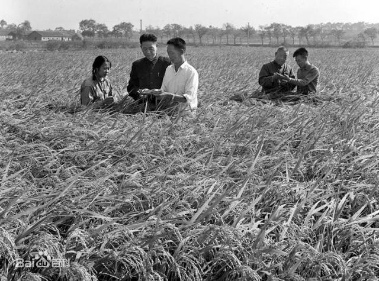

袁隆平
袁隆平（1930年9月7日-2021年5月22日），男，汉族，生于北京，无党派人士，江西省九江市德安县人。享誉海内外的著名农业科学家，中国杂交水稻事业的开创者和领导者，中国共产党的亲密朋友，无党派人士的杰出代表，“共和国勋章”获得者，湖南省政协原副主席，国家杂交水稻工程技术研究中心原主任，中国工程院院士，被誉为“杂交水稻之父”。

1953年毕业于西南农学院，1995年被选为中国工程院院士，1999年中国科学院北京天文台施密特CCD小行星项目组发现的一颗小行星被命名为袁隆平星，2000年获得国家最高科学技术奖，2004年获得沃尔夫农业奖，2006年4月当选美国国家科学院外籍院士，2010年获得澳门科技大学荣誉博士学位，2013年获得第四届中国消除贫困奖终身成就奖，2018年当选中国发明协会首届会士。2018年9月8日，获得“未来科学大奖”生命科学奖；2018年12月18日，党中央、国务院授予袁隆平改革先锋称号，颁授改革先锋奖章，获评杂交水稻研究的开创者。2019年9月17日，国家主席习近平签署主席令，授予袁隆平“共和国勋章”。2020年11月28日，当选2020中国经济新闻人物。
袁隆平致力于杂交水稻技术的研究、应用与推广，发明“三系法”籼型杂交水稻，成功研究出“两系法”杂交水稻，创建了超级杂交稻技术体系。并提出并实施“种三产四丰产工程”，运用超级杂交稻的技术成果，出版中、英文专著6部，发表论文60余篇。
人物生平
- 1930年9月7日[20]，袁隆平出生于北京协和医院。
- 1931年至1936年，袁隆平随父母居住北平、天津、江西九江、江西赣州、湖北汉口等地。
- 1936年8月至1938年7月，袁隆平在汉口扶轮小学读书。
- 1938年8月至1939年1月，袁隆平在湖南省弘毅小学读书。
- 1939年8月至1942年7月，袁隆平在重庆龙门浩中心小学读书。
- 1942年8月至1943年1月，袁隆平在重庆复兴初级中学读书。
- 1943年2月至1944年1月，袁隆平在重庆赣江中学读书。
- 1944年2月至1946年5月，袁隆平在重庆博学中学读书。
- 1946年8月至1948年1月，袁隆平在汉口博学中学读高中。
- 1947年暑假，袁隆平读高中一年级时获汉口赛区男子百米自由泳第一名；获湖北省男子百米自由泳第二名。
- 1948年2月至1949年4月，袁隆平在南京中央大学附中（今南京师范大学附属中学）读高中。
- 1949年8月至1950年10月，袁隆平在重庆北碚夏坝的相辉学院农学系读书。
- 1949年8月至1953年8月，袁隆平在西南农学院农学系农作物专业学习。
- 1950年11月至1953年7月，院系调整并入重庆新建的西南农学院农学系，袁隆平续读3年至毕业。
- 1951年7月，袁隆平在西南农学院报名参加空军，体检、政审合格，后因在校大学生更需参加经济建设，而未入伍，继续留校学习。
打开百度百科，了解更多资讯。